Building the Product and the System Around It
The EV911 moved from a loosely defined concept toward an executable product on a compressed timeline. My role was to define the interior, establish the product-development framework, direct CMF and physical design, manage the Design–Engineering feedback loop, and connect those decisions to BOM, sourcing, cost, and manufacturing.

Define the vehicle while building the system used to develop it.
When I entered Design, the EV911 concept had only a small number of established anchors: a narrow-body 911 SC G-Series platform, Fuchs-style wheels, and a broad intent to modernize the car without losing its identity.
The schedule did not allow product definition to happen sequentially. I had to mature the interior while simultaneously creating the documentation structure used to define it. I authored the Product Charter structure, formatting, and content; developed the interior feature specifications in parallel; and released Rev 001 in late March—less than four months after starting the work.
Define the Interior
Features · customer-facing functionality · surfaces · material direction · component intent · physical prototypes.
Build the Product-Definition System
Expectations · feature specifications · maturity · requirements · acceptance logic · revision control · Design-to-Engineering handoff.
Charter + interior definition begin
Rev 001 released

Set the product frame
Brand · Customer · Design · Performance expectations define what the vehicle should be.
Break it into systems
Interior, exterior and controls features translate the vehicle-level direction into actionable scope.
Clarify the intent
Material, fit, function, aesthetics, flexibility, interfaces and special considerations are made explicit.
Keep the definition current
New information is incorporated through controlled revisions and tied back to the active development task.
Build customer choice without creating uncontrolled complexity.
I developed the EV911 exterior and interior CMF strategy as one system. Kindred's operating model favors a limited number of well-resolved options, so the goal was to create meaningful variation while keeping combinations interchangeable enough to support purchasing, production, and scale.
The result centered on two complete interior environments—warm Cork and cool Graphite—paired against an exterior palette that began with eight colors and later expanded to ten. I created the physical storyboards to make those relationships tangible for Design, leadership, operations, and customers.
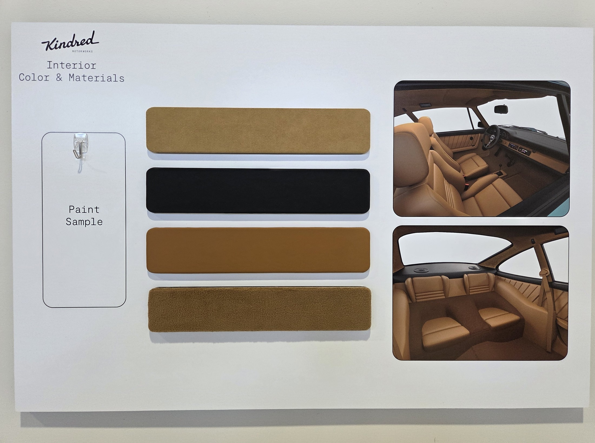
Warm leather and trim direction presented with the rendered interior as one complete environment.
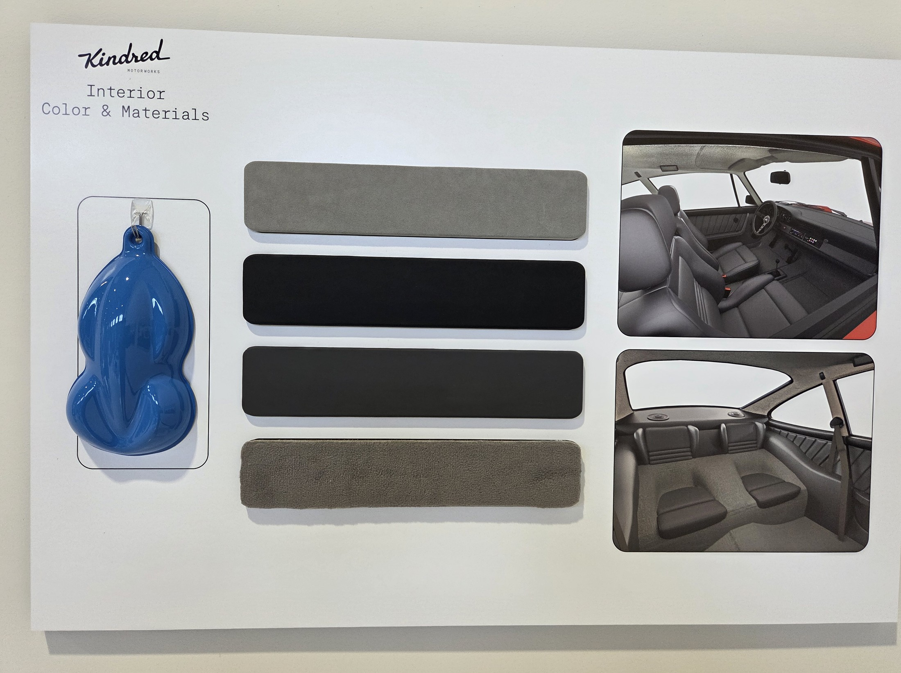
A parallel cool-toned environment built from the same vehicle architecture and option strategy.
Evaluate color at the vehicle level, then validate it physically.
The exterior palette was developed as complete vehicle colorways rather than isolated paint chips. Each rendered application could then be checked directly against the corresponding physical paint sample before becoming part of the customer-facing palette.
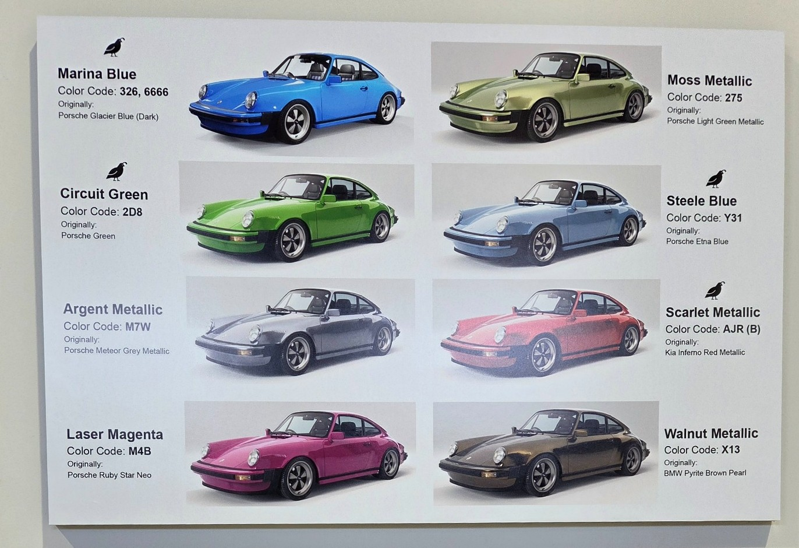
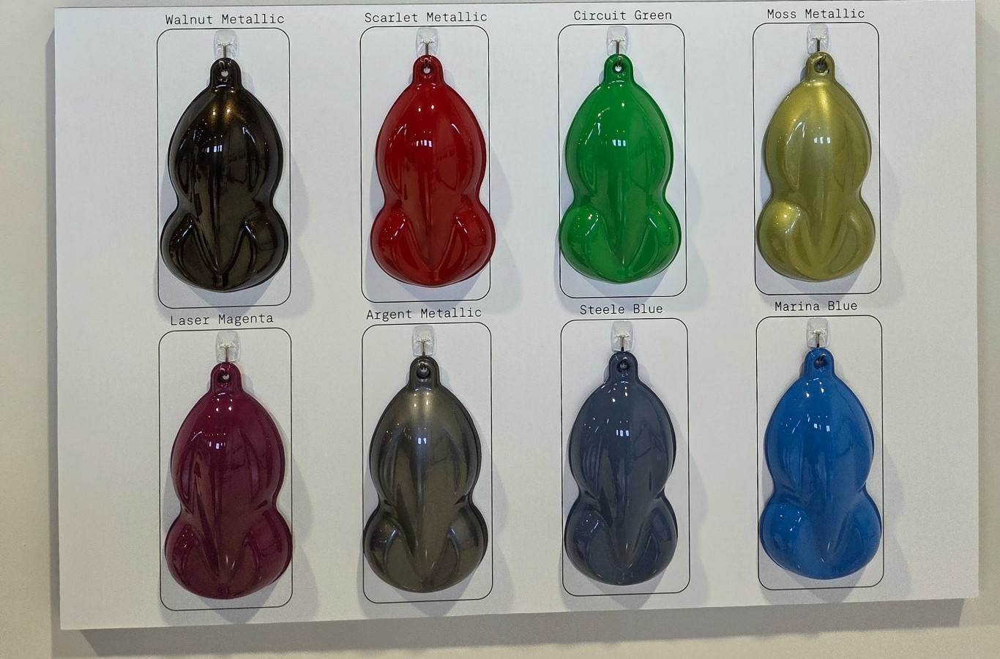
The same boards are installed in the Design Studio I set up and curate. They function as working product-definition tools for internal reviews and as a clear customer-facing way to understand complete vehicle combinations; the presentation has contributed to multiple sales and pre-orders.
Move from visual direction to surfaces, prototypes, revisions, and Engineering-ready intent.
I work with rendering artists to incrementally mature the interior and exterior design, then work directly with our Industrial Designer to develop the interior surfaces. The two of us carry much of the customer-facing interior through surface development, physical prototyping, and revision before handing increasingly mature intent to Engineering for vehicle integration.
That division of work is deliberate. It reduces the burden on a small, focused Engineering team whose highest-value bandwidth is concentrated on drivetrain, batteries, thermal management, controls, and vehicle integration—while keeping the interior development physically grounded and moving in parallel.
Product intent, CMF and feature requirements.
Incrementally mature form, proportion and customer-facing language.
Industrial Design develops component architecture and geometry.
Physical development exposes fit, material and usability issues.
Mature intent moves into vehicle integration with controlled requirements.
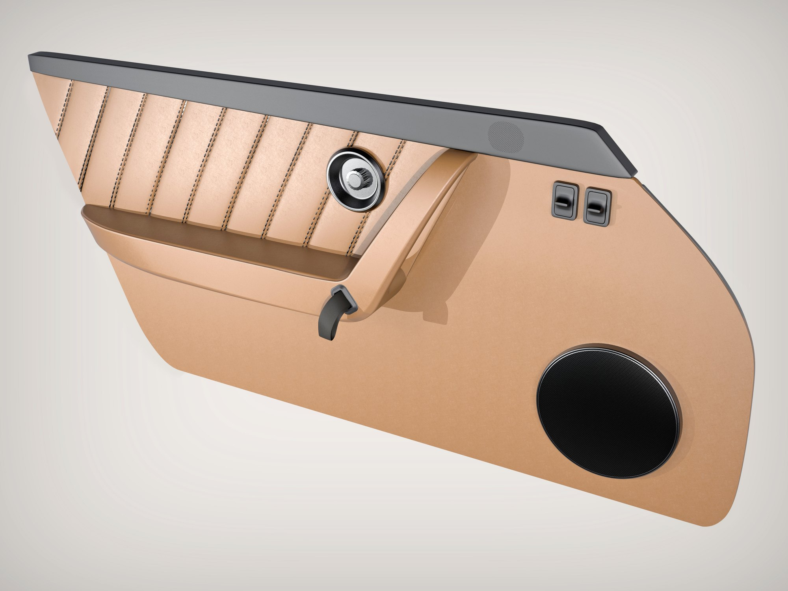
Current door-panel development — Cork
Later geometry reflecting the matured interior architecture rather than the early concept render.
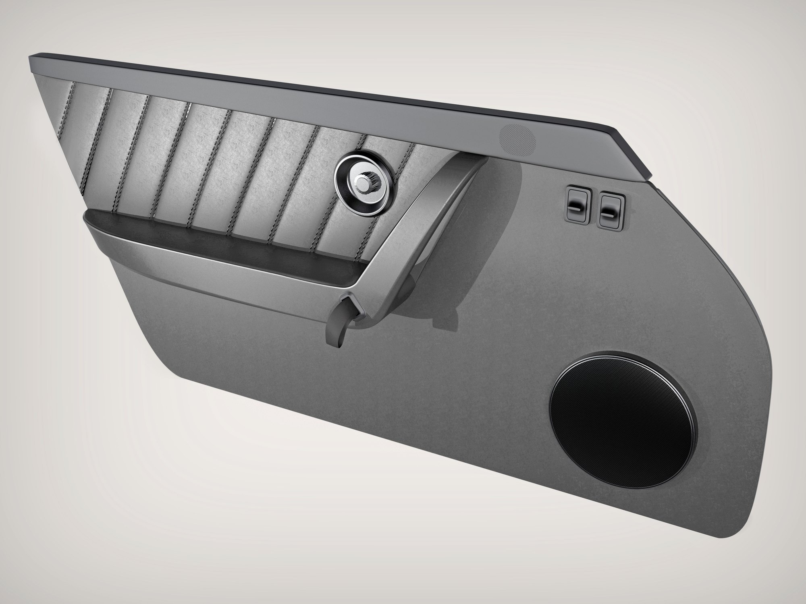
Current door-panel development — Graphite
The same component architecture carried across the scalable CMF strategy.
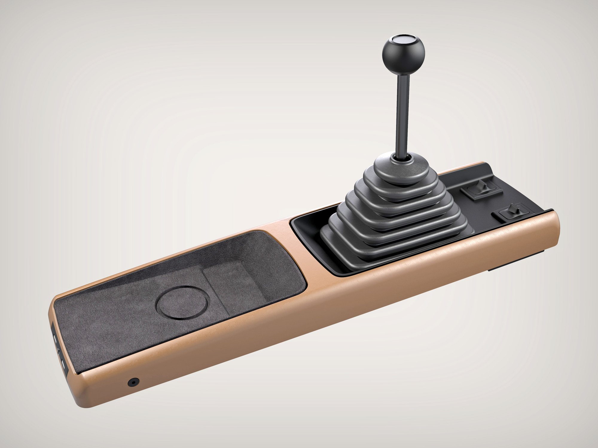
Current center-console development — Cork
Modern EV functionality integrated within a restrained physical and material language.
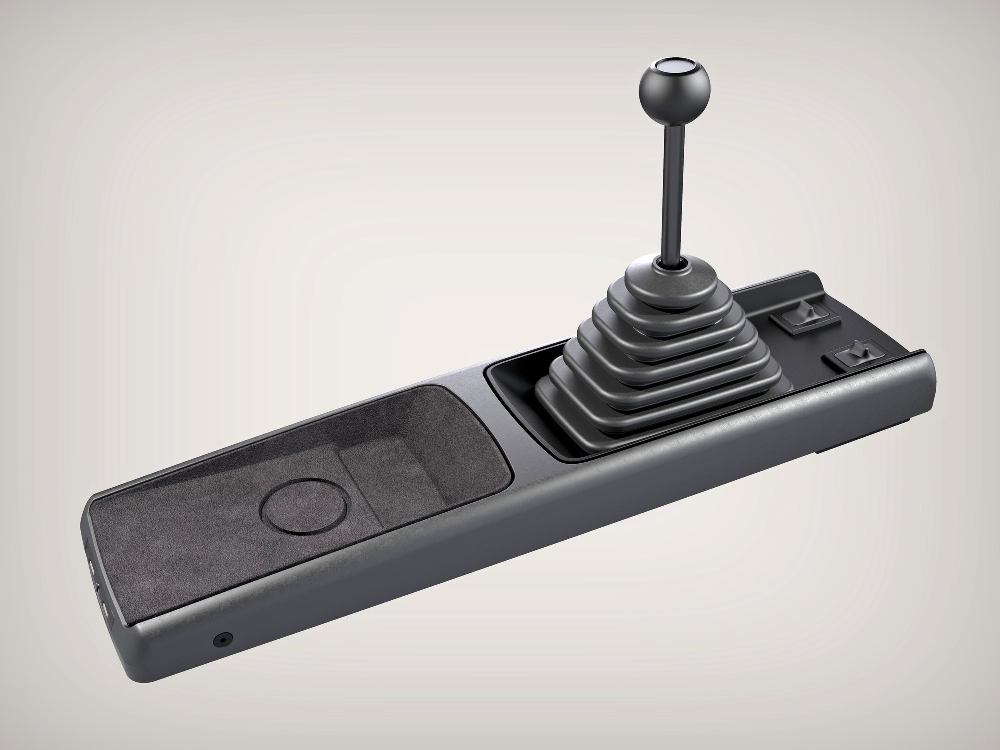
Current center-console development — Graphite
Material and feature intent remain consistent across the alternate interior environment.
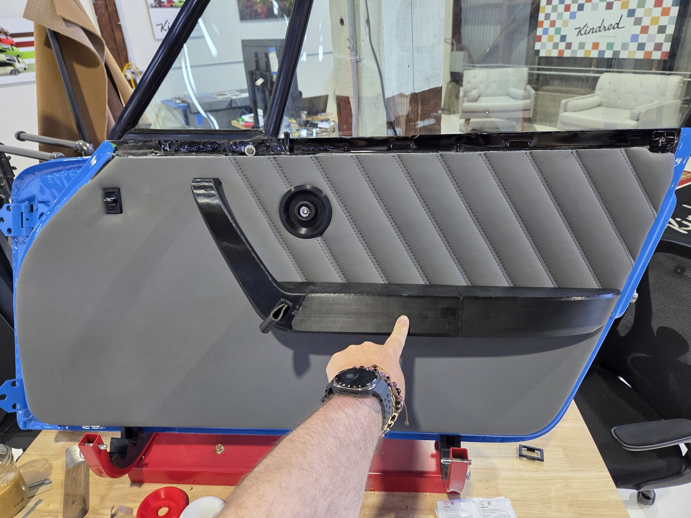
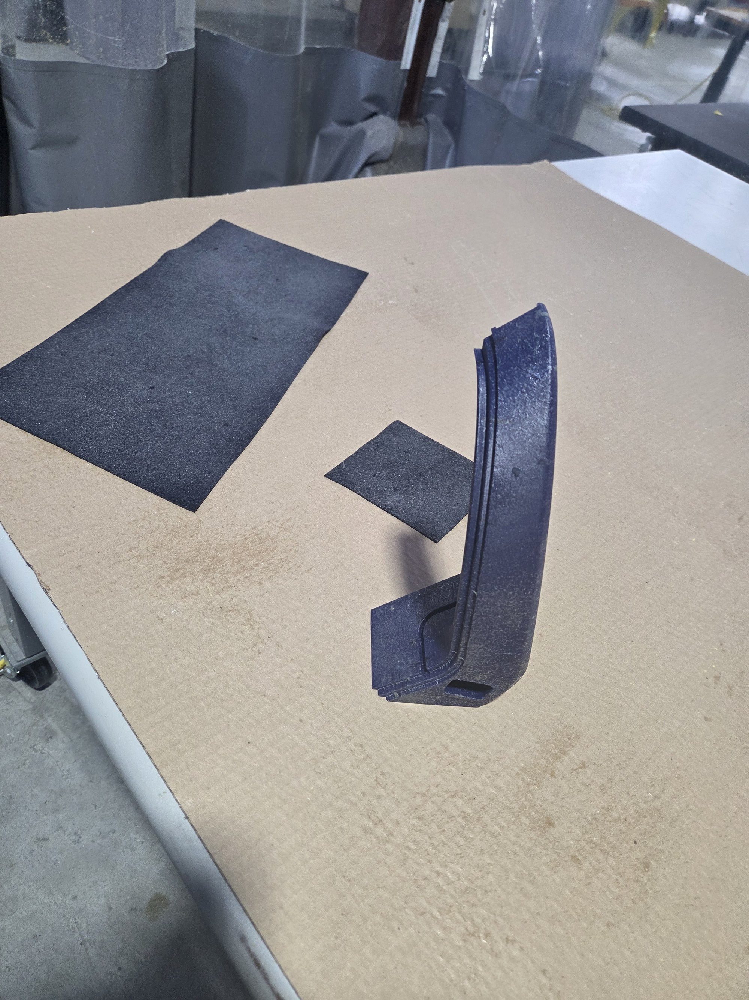
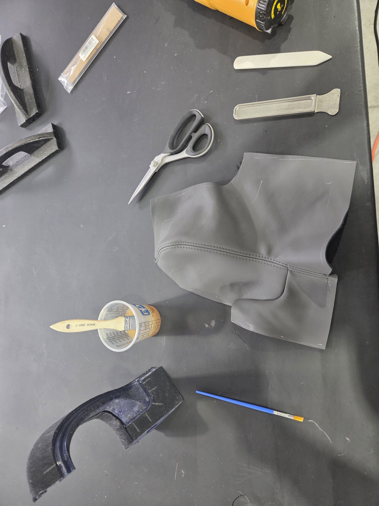
Requirements become more specific as the vehicle becomes more real.
Engineering begins with the initial design intent and feature requirements. As packaging, interfaces, controls, manufacturing, or validation expose new constraints, the team comes back for additional design definition. I resolve those questions with the appropriate disciplines, update the Charter as a controlled document, and socialize the requirement through the assigned Jira task so the active work and the product definition remain aligned.
This creates an iterative loop rather than a one-time handoff: Design defines intent, Engineering tests it against the vehicle, and new technical information is converted back into clearer requirements.
Feature direction, CMF, visible geometry, customer experience and known constraints.
Industrial Design and physical development increase definition and expose risk.
Packaging, systems, controls, manufacturing and vehicle interfaces challenge the intent.
New questions become targeted design requirements rather than informal assumptions.
The Charter is updated so the latest requirement becomes part of the product definition.
The requirement is tied to the active task, owner and development work.
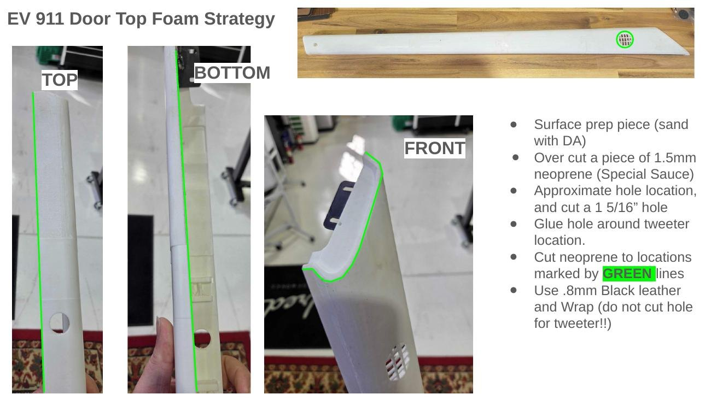
Technical translation example: door-top foam strategy
Soft trim is one place where I can add unusual value to the Engineering conversation. A surface may be nominally correct in CAD and still fail once foam, leather, laminations, holes, edge wraps, seam placement and material movement are introduced.
This strategy turns those physical behaviors into an executable development approach—substrate preparation, foam boundaries, feature locations, material thickness, wrap zones and process sequence—so the team can engineer around the real behavior of the finished assembly.
Product definition also determines what gets bought, designed, sourced, and manufactured.
From January through August, I worked with our technician to systematically build the top-level Design BOM. We identified original OTS parts worth retaining, new OTS components needed to support the EV911 feature set, and parts that made more sense to develop as made-to-spec solutions.
That work feeds sourcing and vehicle-level costing. It also exposes design opportunities: several replacement parts were disproportionately expensive to purchase new, creating cases where we could design and manufacture an appropriate solution for substantially less while improving program margin.
Retain OTS
Keep existing components when they satisfy product intent, condition, availability and cost.
Add New OTS
Introduce proven components where they support new functionality without unnecessary development.
Develop MTS
Create a designed solution when OTS cost, quality, packaging or product fit does not make sense.
Make the product visible
Structure the top-level vehicle definition so Design, sourcing and costing are working from the same product.
Sourcing + Cost + Margin
Use the BOM to inform purchasing, expose cost drivers, and identify where design can improve value.
That is the scope I want future teams to understand: I can stay technically close to the product while creating enough structure for a multidisciplinary organization to move faster, make better decisions, and preserve design intent as the product becomes real.